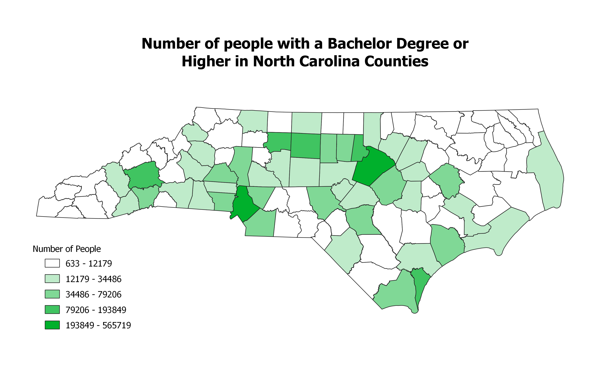

Homework 6: Census data choropleth
Duncan Richey
This is a map showing the absolute number of people in each NC County that have attained a Bachelor's degree or higher level of education

Data used for this project
CSV dataset
Link to shapefile